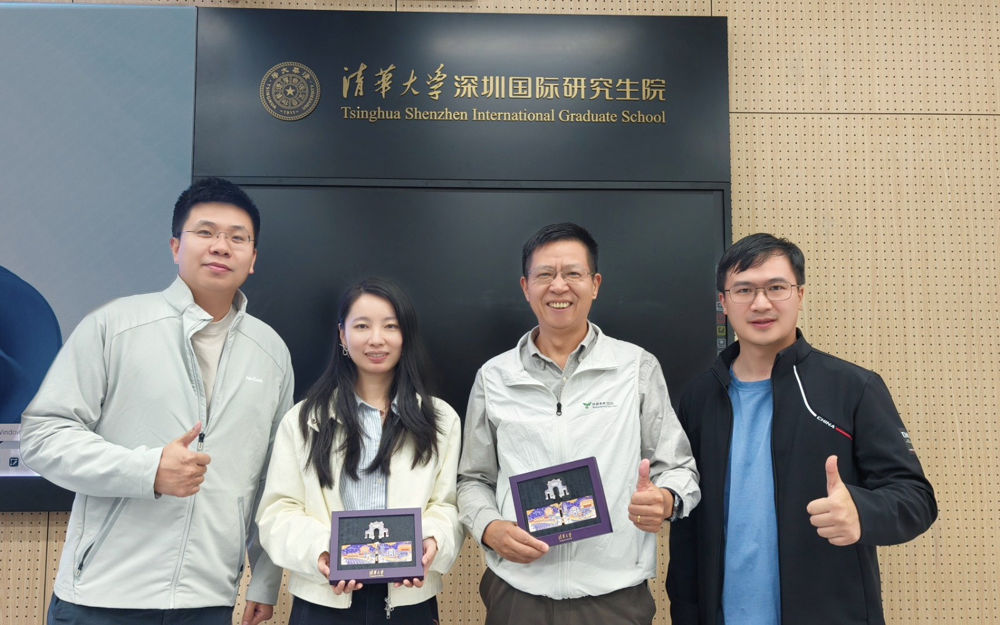
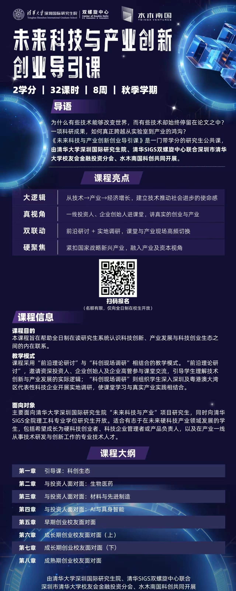

课程回顾
未来科技与产业创新创业导引课第八课 · 结课实践
从走进产业到发现机会，13组硬科技方案的结课答辩
11月10日，《未来科技与产业创新实践》在清华大学深圳国际研究生院C1-101教室举行结课展示。本次活动由清华大学深圳国际研究生院双螺旋中心主办，深圳市清华大学校友会金融投资分会、水木南国科创协办。
讲台交给了学生。各组携商业计划书/技术及产业分析报告登台，10分钟直陈问题与判断依据，5分钟接受评委现场追问。
- 汇报小组
- 13组
- 研究生
- 27位
- 产投评委
- 4位
第一组｜面向AI推理的光电混合计算
小组成员谢佳艺、李树楷
光计算省下的电，够不够抵消整机的额外开销？他们将数据搬运、光电转换、光源与校准的耗电一并入账，比较光电混合在何种条件下才真正省电。
第二组｜Eigensolution 我学我术
小组成员陈家俊、曹泽昱
啃教材卡壳，难的往往不是这一页，而是漏掉的前置知识。现场演示的AI学习助理将概念连成图谱，引导学习者找到读懂教材所需的基础。
第三组｜AI驱动的材料自主实验平台
小组成员刘汉清、杨天
材料生长靠人工衔接，批次数据常各自孤立。围绕CVD生长与光学表征，他们提出用样品编号串起配方、工艺与结果，让实验可追溯对照。
第四组｜变刚度眼外手术机器人
小组成员罗晗瑜、阳涵
后巩膜加固术须在眼后毫米级间隙穿行，既要柔顺入路又要稳定承力。受穿山甲鳞片嵌锁启发，团队设计了变刚度眼外器械方案。
第五组｜芯净无尘 · 超洁净半导体行业多相协同净化活性纳纤膜
小组成员陈宇、陈星甫
洁净室同时面临超细颗粒与气态污染，叠加滤材却会推高风阻。他们提出用一层活性纳纤膜拦截颗粒、吸附气态污染物，以效率、压降和寿命权衡得失。
第六组｜SmartGrip 羽毛球握持感知与训练反馈构想
小组成员何家轩、冯柯涵
视频看得清球路，却拍不清指尖收放的刹那。结合18份球场访谈，他们提出用握把压力对照击球时序，也坦诚局部读数不等于整手握力。
第七组｜眼科微型无缆磁控机器人产业化前景与落地路径
小组成员胡译丹、王佳贤
磁控机器人能在眼内游走，离剥除黄斑前膜还有多远？团队直面定位与操作瓶颈，更将可靠回收和异常时医生接管设为落地底线。
第八组｜SmileCheck AI正畸面容预测平台
小组成员马文骁、王一润
拔不拔牙、侧貌怎么变，是正畸咨询中常见的难题。SmileCheck并排展示预测面容，小组计划先用已完成治疗的病例回测准确度，再检验沟通价值。
第十三组｜人体状态无感监测仪
小组成员井思诺、林子微
手环不愿常戴、摄像头又涉隐私，日常照护亟需更温和的解法。小组提出用超宽带（UWB）雷达无感监测活动、睡眠与跌倒风险，并将异常提醒发送至照护平台。
第九组｜高压断路器碳陶瓷合闸电阻
小组成员罗王贤、徐天驰
断路器合闸毫秒之间，电阻须瞬时吸能并适配紧凑空间。梳理国产进展后，他们点出批量供货的真正门槛：批次阻值一致与挂网实绩。
第十组｜面向DRG付费的国产腔镜手术机器人
小组成员李路、晁奕炜、安志诚
小组引用的数据显示，2024年国内机器人辅助腔镜手术渗透率为0.7%。三位同学从DRG付费下单台手术的盈亏平衡倒推设备和耗材成本，将其作为设计约束。
第十一组｜超滑如何创造产业价值
小组成员傅嘉乐、何俊杰
灵巧手高频抓握，一颗小电机的磨损就足以令整手停摆。他们从结构超滑的极低摩擦特性切入，探讨以减磨延寿兑现产业价值的路径。
第十二组｜从实验室到车间：AI工业酶如何跨越落地鸿沟
小组成员聂士尧、涂建广
小组展示的案例中，工业酶催化效率在实验室提升8倍，进车间却在3天内失活。他们据此提出90天验证计划，重点检验工业酶在真实工况下能用多久。
结课评议
四位评委参与课堂答辩
美镓传感联合创始人刘煦、广东清大创新研究院科创投资中心副总经理陈德卫担任企业评委。
清华大学助理教授彭德利教授与深圳市清华大学校友会金融投资分会秘书长、水木南国合伙人张宇轩担任课程评委。

八周里，同学们走进企业展厅与研发一线，了解产品在使用中遇到的难题。结课时，他们带着球场访谈、单台手术的成本测算和工业酶寿命验证计划走上讲台。
同学们把参访中学到的判断方法用在了自己的方案上，在答辩中既讲清技术能做什么，也用证据说明谁需要它、为什么值得做。
关于课程
《未来科技与产业创新实践》
本课程是一门研究生公共课，设2学分、32课时，共8周。围绕生物医药、材料与先进制造、AI与具身智能等方向，将“前沿理论研讨”与“科创现场调研”相结合，帮助同学们认识科技创新、产业发展与科创生态之间的联系。
一线投资人、企业创始人及高管走进课堂，同学们也走进企业，了解产品、岗位与真实需求，让接下来的学习与研究，多一份来自产业真实问题的牵引。
